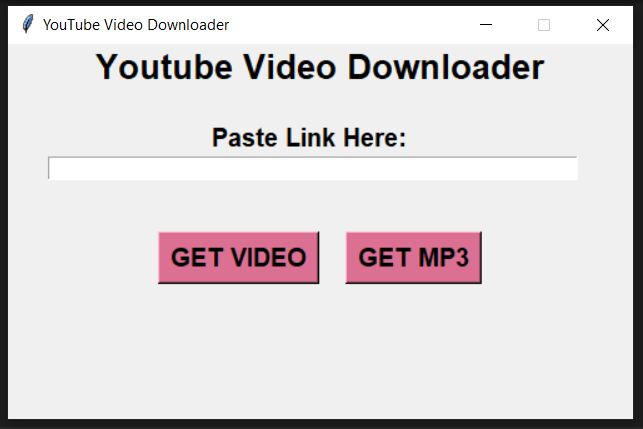

Git Hub Projects
YouTube Video/MP3 Downloader
A simple YouTube Video and MP3 downloader that was built in Python
- Language Used:
- Python 3.19
- Modules:
- PyTube, OS, and Tkinter
- GUI Design:
- Tkinter and Ttk
- Limitations:
- Video files are limited to 720p resolution
- Exporting:
- EXE was exported using PyInstaller
DOGE, BIT, and ADA Tracker
Console based CrytoTracker for Dogecoin, Bitcoin, and Cardano.
This program will simply ask for your owned amount of DOGE, BIT, and ADA
then stores your coin within a JSON file for persistant storage. The program
will scrape Coin Market Cap for the current price of the coins and shows
the user their total investment. Refreshes every five minutes.
- Language Used:
- Python 3.19
- Modules:
- BeautifulSoup, OS, and Time
- Limitations:
- Program is only able to track the 3 coins
- Exporting:
- None - Console only
Direct link to my GitHub can be found here